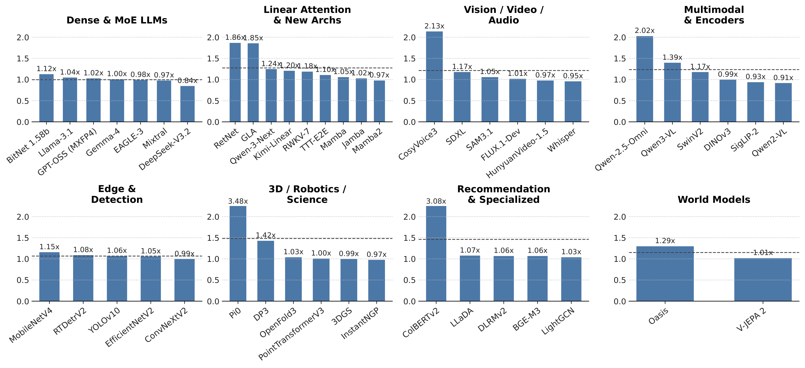
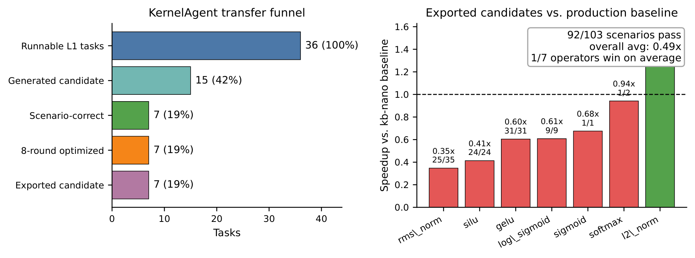
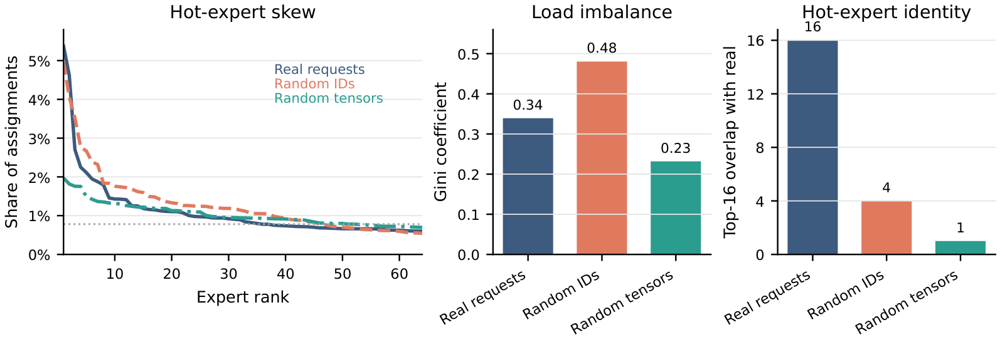

LLM-based agents for GPU kernel generation are advancing rapidly, yet their progress is fundamentally constrained by the benchmarks they optimize against. Existing benchmarks are poorly aligned with production inference frameworks: they evaluate kernels on a single GPU with synthetic inputs, ignore the surrounding compilation stack, and reward replicating known optimizations rather than discovering new ones. The resulting reward signals are misleading—agents learn to generate kernels that score well in sandboxes but introduce interface incompatibilities, compilation-stack conflicts, and silent correctness degradation when integrated into real systems.
We introduce FastKernels, a kernel benchmark built around a minimal set of 46 representative architectures spanning 8 categories, whose kernels collectively subsume those of 96.2% (409/425) of HuggingFace Transformers architectures. FastKernels doubles as a minimalistic, production-grade inference framework that runs at parity with hardened systems such as vLLM and SGLang on mainstream LLM serving and substantially exceeds upstream references on under-served architectures; each task's interface mirrors the corresponding module in the state-of-the-art library for its architecture family, enabling direct deployment of optimized kernels into production codebases.
Evaluating state-of-the-art kernel agents on FastKernels, we find that even the strongest agent achieves only 0.94× aggregate speedup over production baselines, with weaker agents at 0.78× and 0.53×—confirming that benchmark–production misalignment is a critical bottleneck for the field. We release FastKernels as a stepping stone toward kernel agents whose benchmark gains translate directly into production throughput improvements.
LLM-based kernel-generation agents now achieve strong scores on isolated benchmarks, with state-of-the-art systems autonomously compiling, profiling, and refining CUDA or Triton code. Yet these gains often fail to transfer into production inference frameworks such as vLLM and SGLang: kernels that score well in sandboxes routinely regress once they encounter real serving interfaces, compilation stacks, and workloads.
The root cause is benchmark–production misalignment. Current benchmarks rely on synthetic inputs, single-GPU isolated kernels, simplified interfaces, and independent task levels that do not compose into full inference pipelines. They therefore reward kernels that are fast in isolation but brittle in deployed systems, hiding interface mismatches, compilation-stack conflicts, and correctness degradation that only appears at model scale.
FastKernels closes this gap by being a benchmark that is the framework: optimized kernels run inside a real inference pipeline rather than being ported from a separate harness, and each task's interface mirrors the corresponding module in production libraries so winning kernels are immediately deployable.
FastKernels is a self-contained inference framework whose task interfaces match production modules, so optimized kernels can be evaluated in place and transferred into systems such as vLLM and SGLang with no heavy refactoring.
Tasks progress from primitives (L1) to fused operators (L2), layers (L3), and full models (L4). Agents can reuse lower-level optimizations inside higher-level modules instead of solving each level independently.
Kernels are evaluated with production baselines (cuBLAS, FlashAttention-3, FlashInfer, vLLM CUDA ops, DeepGEMM, FLA), captured tensors, compilation-stack effects, and multi-GPU communication including tensor and expert parallelism.
FastKernels injects generated kernels into full model executions, checks downstream quality, and reports MacroEval, which combines calibrated correctness, coverage, and end-to-end throughput–latency speedup across model families.
46 architectures across 8 categories—dense and MoE LLMs, linear attention and SSMs, vision, audio, video, robotics, 3D graphics, recommendation, and world models—benchmarked against production references rather than hardware-theoretical bounds.
To our knowledge the first kernel benchmark to include collectives as first-class tasks: tensor-parallel all-reduce / reduce-scatter, expert-parallel all-to-all dispatch and combine for MoE routing, and computation–communication overlap kernels.
FastKernels organizes tasks into four levels of increasing scope. Unlike benchmarks whose levels are independent, this hierarchy enables a dynamic-programming style optimization loop: an agent can reuse an optimized lower-level kernel (e.g. a linear operator) when optimizing higher-level modules (e.g. MLPs or transformer blocks), instead of rediscovering the same building block from scratch.
Individual operations: attention variants (GQA, MLA, sliding-window), normalizations (RMSNorm, LayerNorm), activations (SwiGLU, GeGLU), positional encodings (RoPE, ALiBi), and quantization/dequantization routines.
Multi-operation kernels representing natural fusion opportunities as they arise in real models: residual-add + RMSNorm + quantization, attention + output projection, MoE gate + dispatch + expert computation.
Complete architectural blocks: transformer decoder layers, SSM scan blocks, MoE layers with routing, cross-attention layers, and vision encoder stages.
Full model inference paths evaluated as integrated systems. The 46 representative architectures in L4 serve as the end-to-end evaluation set, and underlying L1–L3 kernels cover the overwhelming majority of operators across ML and AI models.

Each bar shows the speedup of FastKernels over the strongest production or upstream reference for one architecture. Panels group architectures by category; the dashed line in each panel marks the average speedup within that category.
Across 46 representative benchmarks, FastKernels averages 1.24× throughput (1.04× median). On mainstream LLM serving against hardened frameworks like vLLM and SGLang, FastKernels sits at parity (e.g. Llama-3.1 1.04×, GPT-OSS 1.02×, Mixtral 0.97×, DeepSeek-V3.2 0.84×). Supra-unity gains concentrate on architectures whose only available reference is a research repository or a non-serving library: Pi0 3.48×, ColBERTv2 3.08×, CosyVoice3 2.13×, RetNet / GLA ~1.86× vs. FLA.

We evaluate three state-of-the-art kernel-generation agents—Dr. Kernel, KernelAgent, and OpenAI Codex—on FastKernels L1 and L2 (88 target families). On aggregate, all three land below 1× against production-grade references:
Two findings explain the gap: (1) production-grade references (cuBLAS, FlashAttention-3, FlashInfer, DeepGEMM, FLA) separate apparent gains from real ones—Codex hits 1.16× on torch-eager-wrapped operators but only 0.93× on vendor- or hand-written kernels; and (2) production-shaped composite modules (full attention, MoE, and YOLOv10 blocks lifted from production code) are markedly harder than primitives—every agent that reaches L2 regresses on it.

FastKernels captures and replays the tensors production models actually feed to kernels. Our MoE routing study shows that synthetic inputs materially change both load skew and hot-expert identity: kernels that look great on uniform-random routing decisions can underperform once the actual production routing distribution is replayed.
Model families expose different correctness signals—tokens, embeddings, labels, rankings, trajectories, audio, video—and different throughput–latency tradeoffs. MacroEval calibrates architecture-specific correctness to a common [0, 1] scale, measures end-to-end speedup, and macro-averages across families so no single architecture dominates the leaderboard.
The default leaderboard score multiplies three components: macro-geometric speedup Smacro, macro-calibrated correctness Cmacro, and macro-coverage. This rewards agents that are simultaneously fast, correct, and broadly applicable, while still exposing the three component metrics so users can identify throughput–correctness or coverage–performance tradeoffs.
FastKernels requires Python 3.10+, CUDA 12.x, and a recent NVIDIA GPU (Hopper / Blackwell tested; Ampere supported for a subset of kernels). Clone the repository and install:
git clone git@github.com:sfc-gh-goliaro/kb_nano.git
cd kb_nano
pip install .
Each supported architecture is implemented under tasks/baseline/, organized by level. To scaffold a
candidate kernel with the correct signature:
# Scaffold candidate stubs
python agent/create_stubs.py # all operators
python agent/create_stubs.py --level 1 # L1 only
python agent/create_stubs.py --architecture llama # Llama only
Then drop your replacement in tasks/candidate/L<level>/<op_name>.py exposing the same class
name and forward signature as the baseline. The benchmark validates correctness against the production
reference and reports speedup:
# Kernel-level: correctness + speedup for a single operator
kb_nano kernels --target rms_norm
# Standardized end-to-end eval sweep
kb_nano eval --model meta-llama/Llama-3.1-8B-InstructExisting benchmarks construct tasks bottom-up by combining primitive operators or extracting subgraphs via automated pipelines, evaluate on a single GPU with synthetic inputs, and compare against PyTorch eager. FastKernels takes a top-down approach: it starts from real model families, walks the forward pass, and produces standalone tasks whose interfaces match the corresponding modules in production libraries (vLLM, SGLang, diffusers, FLA, timm). Speedups are measured against the kernels production systems actually ship—cuBLAS, FlashAttention-3, FlashInfer, vLLM CUDA ops, DeepGEMM—not torch eager.
FastKernels consolidates near-identical operators (e.g. RoPE variants, normalizations, attention backends) into a
single L1/L2 task and picks a small set of representative architectures whose union of operators subsumes the
long tail of model families. An audit of every PyTorch modeling file in HuggingFace Transformers (commit
da6c53e4; 425 entries) indicates that these 46 architectures cover 96.2% (409/425) of HF
architectures with no new compute primitive—only 5 architectures require a genuinely new kernel and 2
require an external library.
Yes. Each task's __init__ constructor signature and forward method are designed to
closely match the corresponding module in the state-of-the-art library for its architecture family. A kernel
optimized within FastKernels can be deployed into vLLM, SGLang, or another production framework essentially via a
copy-paste of the module, with no heavy interface refactoring. Unlike FlashInfer-Bench's FIApply (which substitutes
at the kernel dispatch level), FastKernels operates at the module level—the unit of composition that
production frameworks actually use.
Production inference at scale is almost always distributed, and the resulting collectives, synchronization barriers, and communication–computation overlaps materially affect end-to-end latency. To our knowledge FastKernels is the first kernel benchmark to include them as first-class tasks: tensor-parallel all-reduce / reduce-scatter, expert-parallel all-to-all dispatch and combine for MoE routing (DeepSeek-V3, Mixtral), and overlap kernels that must hide NCCL collectives behind computation. A kernel that achieves 1.5× on a single GPU can still degrade end-to-end throughput if it disrupts the communication schedule—these tasks are unreachable from single-GPU benchmarks.
We evaluate three state-of-the-art agents on FastKernels L1 and L2 (88 target families):
All three land below 1× on aggregate, in contrast to the supra-unity numbers reported on operator-level benchmarks whose reference is PyTorch eager. The per-target results pinpoint two design choices in FastKernels that account for the gap: production-grade references and production-shaped composite modules at L2.
Yes. For each model architecture, the FastKernels construction pipeline loads the HuggingFace configuration and architecture definition, walks the forward pass, and produces standalone task implementations for each kernel with all configuration constants (hidden size, number of heads, data types) inlined from the model's configuration. The pipeline ships as part of the framework, so users can add new architectures from HuggingFace with minimal effort. See the documentation for details.
FastKernels exposes three tiers of increasing scope:
forward() outputs and runtimes across an input registry of shapes, dtypes, and init
arguments. For data-dependent operators (e.g. MoE dispatch) it replays golden inputs captured from real
end-to-end executions.Profiling is first-class: Tier 1 integrates with NVIDIA Nsight Compute (NCU); Tier 2 with NVIDIA Nsight Systems (NSYS). MLflow integration tracks kernel lineage and benchmark history.
@article{oliaro2026fastkernels,
author = {Gabriele Oliaro and Yichao Fu and May Jiang and Owen Lu and
Junli Wang and Hao Zhang and Zhihao Jia and Samyam Rajbhandari},
title = {FastKernels: Benchmarking GPU Kernel Generation in Production},
journal = {arXiv preprint arXiv:2605.23215},
year = {2026},
url = {https://arxiv.org/abs/2605.23215}
}